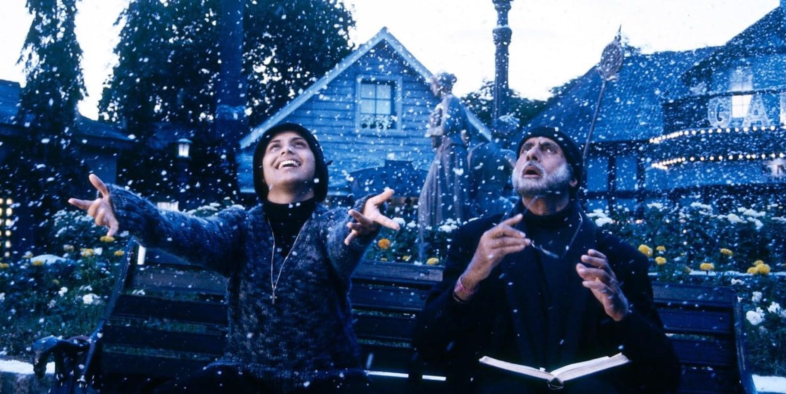

Ichimizdagi sir yakkashoxlikka olib borishi haqida
Insholarimizda birrovgina eslab ketgan jumlamiz bor:
Odam o'zi nimaga qodirligini oldindan bila olmaydi.
Bugun shu fikr haqida chuqurroq gaplashamiz, Ismoil.
Muallif endigina o'smirlik uyiga qadam bosayotgan paytlarda, yurtimizda Hindistonning Zulmat "Black" filmi ommalashgan edi.
Filmda qarib borayotgan o'qituvchining, kar va ko'r (demak soqov ham) o'quvchini tarbiyalash jarayonlari aks etgan. Ko'rmagan bo’lsang tavsiya qilaman, bu film Amitax Bachchanning shoh rollaridan bo'lsa kerak:


Balki shuning uchun ham bollivudning eng qimmat aktyori bu filmda o'ynash uchun umuman haq olmagandir.
Ancha o'tib bildimki, film real voqealarda ilhomlangan. Kimdan ilhomlanishganini borib, topib ham keldim.
Film oddiy g'oyani yoymoqchi: vaqtini bag'ishlay oladigan murabbiy topilsa, kar, ko'r va soqov odamni ham ilmli qilish mumkin. Balki shuning uchun ham Imom Rabboniy shuni orzu qilgandilar:
Qaniydi, har bir o'smirning tarbiyalovchi murabbiysi bo'lsa!
Chunki amaliyotda murabbiylar asosan moliyaviy imkoniyati yuqori tadbirkor, serdaromad mutaxassislar yoki o'ta iqtidorli talaba va sportchilarda bo'ladi.
Makarenko va bezori yigitlarning oqibati, Suxomlinskiyning oqsoq bolalar bilan ishlash tajribasi ham umid yo'qolgan bolalardan ham ancha narsa olish mumkinligini ko'rsatadi.
Makarenko kimlar bilan ishlashiga(bir o'quvchi misolida) to'g'ri kelganiga e'tibor ber:
Bir haftadan keyin izquvar Bendyukni kechasi sodir etilgan qotillik va o'g'rilik uchun xibsga olgani keladi. Lidochka bu voqeadan o'lgudek qo'rqib qoladi. Xonasida yig'lab o'tiradi va faqatgina bir savolni so'rash uchungina chiquradi:
— Qanday qilib shunday bo'lishi mumkin? Bu nimasi? Qanday qilib axir? Borib, o'ldirib kelibdimi?
Yekaterina Grigorevna, jiddiy kulib, qoshini yaqinlashtirib:
— Bilmadim, Anton Semenovich, bilmadim. Balki shunchaki ketish kerakdir. Bilmadim bular bilan qanday gaplashish kerak.
Mana shunga o'xshash yigitlarni bir necha kishilik murabbiylar jamoasi to'rt yilda madaniyatli, kasbli va baxtli qilib tarbiyalab chiqaradi.
Endi esa Suxomlinskiyning shogirdlariga qaraymiz(xotiramdan keltiraman):
Patrik, Nina va Valya kabi bolalarda qiynaldim. Ularning tasavvurida muammolar bor edi.
—Tasavvur qil, qo'lingda beshta olma bor, ikkitasini berib yuborsang, nechta qoladi?" — deb so'rasam, bo'sh ko'zlari bilan manga qarab turar edi.
Misha esa savol berganimdan keyin bir necha daqiqagacha jim turar edi. Uning javob berishini kutib turar edim. Ana o'sha bir necha daqiqalik o'ylashdan keyingi javob mani hayron qoldirardi. Mishaning sekin ekanligiga sabab ahmoqligi emas, dunyoni boshqacha ko'rishi edi.
Mana shunday o'quvchilarni pedagog Suxomlinskiy qiziquvchan, kitobsevar, tabiatni yaxshi ko'radigan va axloqli qilib tarbiyaladi.
Maktabdagi tarix darsimizni esla, yurtimizga miloddan oldin ham, forslar(Doro II shekilli) va Makedonskiy qo'shinlari qiziqib yurgan. O'zini hurmat qilgan osiyolik sarkardalar uchun qiziqarli joy hisoblanganmiz:


Arab diyorlari haqida esa unday deya olmaymiz. Yettinchi asrgacha ular mahalliy nizodan ortmaydigan, dunyo tarixida izi bo'lmagan cho'l ahli edi:

Qo'shni millatlar Arab yarim orolini jiddiy olishmas edi. Rim boshqaruviga bir-ikki zaif qarshiliklarni hisobga olmasa, ularda biror bir davlatchilik yoki imperiya yo'q edi. Tarixi ham og'zaki she'riyat bilan cheklangan edi. Greklar, Rimliklar va Forslar xotirasida ular asosan orada xalaqit berib turadigan bosqinchilar sifatida joy olgan edi.
Ana shunday tarqoq va e'tibordan qolgan xalq, payg'ambarimiz alayhissalom tarbiyasida qisqa asrlarda davrining eng yirik imperiyasi bo'ldi. O'sha davrdagi dunyoning yarmini adolat bilan boshqardi. Bu faqat musulmonlarning fikri emas. Islomga aniq muhabbati bo'lmagan, sobiq AQSH prezidenti maslahatchisi Kissinjerning kuzatuvi ham:

Bir necha asrlik jiddi-jahdlardan keyin bu (eski) dunyo ag'darilib ketdi. Tarqalishga intiluvchi va ba'zi jihatlarda keskin adolatli (egalitarian) bo'lgani uchun Islom jamiyati tarixdagi biror boshqa jamiyatlarga o'xshamas edi.
Kissinjer kitobning pastida bu millatning dunyoni egallash tezligiga qoyil qoladi. Hozirgi kunga o'girsak, bu xuddi mahallamizdagi bezori yigirma yilda korzinka (dunyoviy miqyosda esa Apple) kompaniyasini qurishiga o'xshaydi.
Dushmaning sani (ayniqsa adolatli deb) maqtab turishidan ortiqroq xushomad bo'ladimi?
Ko'rmaydigan, eshitmaydigan odamni o'qimishli, bezori bolalarni madaniyatli, qoloq bolalarni bilimli, sahroyi yo'lto'sar millatni adolatli va qudratli qilishning imkoni bor ekan. Demakki, birorta odamdan umidimizni oxirigacha uza olmaymiz. Odamlar istalgan paytda (ayniqsa yoshlikda) keskin o'zgarib ketishlari mumkin.
Biz yonib ketishga tayyor ko'mirmiz, cho'g'imizni kutvommiz xolos. Marsga yetib bora oladigan raketamiz, yoqilg'imiz kelmagan, xolos. Yuz metrlarga o'sadigan Sarv daraxtimiz, unumdor yerimizda emasmiz, xolos.
Odamlar konlardir. Ularni kovlash (ya'ni kashf qilish) kerak.
Odam o'ziga-o'zi sir. O'zini yolg'iz taftish qilgan odam biladiki, o'zimizni ham oxirigacha tanimaymiz. O'zimiz kutmagan ishlarni qilganmiz. O'zimizni hayron qoldira olganmiz.
Mana shunga asoslanib ham sun'iy intellekt odamdan o'tib keta olmaydi deyishimiz mumkin. Sun'iy intellekt o'zining nimaga qodirligini oldindan bila oladi. U o'zi haqida batafsil ma'lumotga ega. Chegaralarini ko'ra oladi. Bu algoritmning asosi, axir. Uning o'zidan ham qaysi ishlarni bitirish va bitira olmasligi haqida so'rashing mumkin. Ko'pincha voqealikka yaqin javob beradi.
Odamlar esa nimalar qila olishini oldindan bilmaydi. Yigirma yil oldin ustachilik qilib yurgan odam, bugun shahrimizdagi eng katta maktabning egasi, millioner va ahli ilmlarning homiysi bo'lib qolishi mumkin.
Ajdodlarimizning katta qismida umrlari hunarmandchilik, chorvachilik, savdo yoki dehqonchilik bilan o'tar edi. Agar ularga "avlodlaringizning katta qismi bir joyda o'tirib, taxtakachga qarab, qo'lida bir nima tugmalarni bosib pul topadi" deganimizda, ishonadiganlari kam topilar edi balki. Odam moslashuvchan. Hayoti jismoniy mehnatdan iborat bo'lsa ham, faqat o'tirishdan iborat bo'lsa ham, moslashib keturadi. Moslashib keta olishini o'zi oldindan bilmasa ham, moslashib keturadi.
Yuqoridagilardan oddiy xulosa olsak bo'ladi. Imkoniyatlarimiz chegaralarini hech kim bilmaydi. O'zimiz ham. Dema-ki, niyatlari va maqsadlarini imkoniyatlaridan kattaroq qilgan odam yutadi. O'zidan ko'proq narsa kutgan odam, rostdan ham ko'proq narsa qila oladi.
Aksarimiz ana shu joyda qoqilamiz. Niyatlarimiz kichik bo'ladi. Tirikchilik chegarasida o'ylab yuramiz. Tirikchilik haqida o'ylaganda ham, millionlar emas, kunimizga yetadigan pullarni maqsad qilamiz. Ozgina pul topish va topgan pulimizga uyimizni turli matohlar bilan to'ldirishni finish chizig'i deb hisoblaymiz:

Ancha-muncha odamlar uchun orzular oddiy: Uy olish. O'sha uyni turli buyumlar bilan to'ldirish. Biror joyga borish yoki sayohat emas. O'zingni narsalar bilan o'rash. Odamlar, bolalar, hayvonchalar. Xuddi qasrga o'xshab.
Bezori, aqliy qoloq, nogiron odamlardan ham sifatli kadrlar chiqarsa bo'ladi. Sharti oddiy, o'zini bag'ishlagan murabbiy bo'lishi kerak. Demakki, sog'lom odamdan ham albatta noodatiy odamni chiqarish mumkin. Shunchaki u bilan shug'ullanuvchi murabbiy kerak. Bunday murabbiylar qimmat, yoki iqtidorlilar uchungina ochiq bo'ladi.
Ana shu murabbiylar oddiy odamlarni o'zgartirib yubora olishining o'zi, bir narsani isbotlaydi – biz o'zimiz o'ylaganimizdan ham ko'proq narsalar qila olamiz. Biz esa buni bilmagan holda, "qobiliyatsizman" yoki "manga emas" deb kichik maqsadlarni tanlab qo'yamiz. Ustimizda ishlamaymiz, chunki maqsadlarimiz ustimizda ishlashga majburlamaydigan maqsadlar bo'ladi. Marrani kichik olib qo'yamiz. Vaholanki:
— Blog ochaman emas, sohamdagi eng kuchli blog qilaman.
— Kapital yig'aman emas, ishlashni unuttiradigan kapital yig'aman.
— Foydali odam bo'laman emas, yuzlab odamga foydali bo'laman.
— Falonchi tanishim kabi bo'laman emas, tarixdagi falonchi buyuk kabi bo'laman.
Deyishimiz ham mumkin edi. Ikkinchisiga urinsak, birinchisi o'zi yo'l-yo'lakay bitib ketar edi. Ikkinchisi(kattarog'i)ga urinsak, qobiliyatlarimiz ham kashf bo'lardi, katta ehtimol. Marafonchida ikkinchi nafas ochilgani kabi yarim yo'lda yengi qobiliyatlarimiz ochilib ketadi.
Xuddi shunday qonuniyatni dunyodagi eng kuchli matematika murabbiysi Jastin Skayzak ham ta'kidlaydi:

Talabchan, qo'llovchi va hurmatingga sazovor, yoshi kattaroq, tajribaliroq odamning qo'lida qanchalik o'sa olishing mumkinligiga hech qachon past baho berma.
Lekin oddiy haqiqatni tushun. Bunday odamni topa olish va uning vaqtiga arzish uchun ham kuchli ko'nikmali va qattiq mehnatkash bo'lishing kerak. O'rtacha va sekin bo'lsang bunday odamga to'qnash kelib qolmaysan.
O'zidan kutuvlari kichkina odamga murabbiy kerak emas. Yashab o'tish uchun ko'p narsa bilish ham shart emas o'zi. Murabbiylar faqat chempionlar uchun zaruriyat. Eng qizig'i – chempion bo'lishni istaganlar bilan murabbiylar ishlashga osonroq rozi bo'ladi.
Qisqa lirik chekinish.
Shogird olgandan keyin uni o'g'ling kabi tarbiyalash kerak. Mehr, vaqt, fidbek ajratish kerak. Ba'zan majburlash, ba'zan ilhomlantirish kerak. Bunday jarayonlarsiz kechadigan ustoz-shogirdlik keskin o'zgarish uchun emas, "falonchining shogirdiman" deyish uchungina bo'lib qoladi.
O'zi shogird tushganda esa, ustozining eng zo'ri shogird bo'lishga intiladi.
Qisqa lirik chekinish tugadi.
Muallif tanish okalarini kuzatadi, maktabni bitirib, hayot yo'llarini tanlaganlariga 15 yilga yaqinlashib qoldi. 35 yillik kasbiy faoliyatning eng faol 15 yilligi. Demak, yarmi desa ham bo'ladi. Hayot futbol bo'lsa, o'rtadagi taym outga yaqin vaqti.
Ularga qarar ekan, kichikroq niyat qilganlar ham o'sha niyatlariga yetishib olishganini ko'rvotti. Bir xil qobiliyatli, faqatgina o'zidan ko'proq narsa kutganlar esa kattaroq natijalarga erishishvotti. Kichiklari esa yo'l-yo'lakay hal bo'lib ketvotti. Buni ko'rgan kichik niyat egalari, o'zlarini kashf qilishda davom etmaganlikdan afsuslanishvotti. Afsusni yengish uchun endi o'zlariga emas, farzandlariga kattaroq talablar qo'yishni boshlashvotti.
Biz bu odamlarni mahalliy maksimumda qolib ketganlar deya olamiz. Kichikroq natijaga erishib, shuning mevasi bilan to'xtab qolganlar.
Mahalliy maksimumda qolib ketish nima? Har bir odamning qisqa muddatli (mahalliy) maksimumi bo'ladi. Oraliqdagi yutuqqa erishadigan vaqti: Yaxshi ishga joylashishi. Chet elga borishi. Qo'liga pul tegishi. Undan chiqib ketmagunicha, global(mutlaq) maksimumini topa olmaydi. Xuddi hayker(toqqa chiquvchi)lar kabi. Hozirgi cho'qqisidan kechmagunicha, balandroq cho'qqiga chiqa olmaydi. Hozirgi yutuqdan kecha olsakkina, undan kattarog'iga yo'l ochiladi.
Xuddi siyosatni cho'qqida tashlab, olim va yozuvchilikka o'tgan ibn Xaldun, Sisteron, Monten kabi. Xuddi obro'ning cho'qqisini tashlab, ilm va axloqda yengi darajaga o'tishga bel bog'lagan G'azzoliy, Faxriddin Roziy, Husayn Buxoriy kabi. Xuddi qishlog'idagi qulay muhitni tashlab, megapolisga kelgan Bo'rivoy kabi. Xuddi amakisining korxonasidagi qulay ishini tashlab, begona joyda "0" dan boshlagan Ahmad kabi. Muallif bir necha marta ishlarini yengidan boshlashiga to'g'ri kelgan. Mahalliy cho'qqidan kechish qiyinchiliklarini biladi.
Niyatlarimiz kichik bo'lsa, mana shu mahalliy maksimumda qolib ketish xavfimiz bor. Niyati yaxshi ish topishgina bo'lgan yigit, yaxshi ish topgach ustida ishlamay qo'yishi mumkin. Maqsadi tadbirkor bo'lishgina bo'lgan mutaxassis, tadbirkor bo'lgach, dangasaligi ortib ketishi mumkin. Hali hech narsamiz yo'q paytda niyatlarimizni katta qilib olmasak, biron nimalik bo'lgach, uni o'zgartirishga qiynalib qolishimiz mumkin.
Muallif o'zi ham yoshroq paytida niyatlarni kichikroq olgan. Bitta barqaror ish joyi va mashinasi niyatlarining cho'qqisi bo'lgan. Keyin esa ishga joylashib olgach, o'sha niyatlari cho'qqi bo'lishga arzimaydigan niyatligini tushunib qolgan. kashf yo'lini tanlagan.
Bugungi inshomizdan maqsad ham shu. Endi yo'lga chiqayotgan hurmatli ukam uchun ogohlantirish – niyatlarni kattaroq olgan oxirida kamroq afsuslanadi. Katta niyatlar katta ishlar qilish uchun, ko'p narsaga erishish uchun qilinmaydi. Katta niyatlar shaxsiyatimizni o'zgartiradi. Axloqimizni ko'rib chiqishga majbur qiladi. O'zimizga bo'lgan talabni oshiradi. Dinimizda ham shunchaki jannatni emas, Firdavsini so'rashga targ'ib qilinganmiz, axir. Kichik va katta niyatga ham bir xil umr ketadi. O'xshatish joiz bo'lsa, umrimiz quyosh tegida qolgan muzga o'xshaydi. Maqsadimiz uchun ishlatsak, ishlatib oldik. Yo'qsa, baribir erib, parlanib ketadi.
Aholini bir doira deb olsak, shular ichida niyati katta bo'lganlar kichik bo'lakni tashkil qiladi. Chizib tushuntirishga ruxsat ber:

Muallif ataylab orzu deb yozmadi. Niyat – harakatga undasagina niyat hisoblanadi. Harakatga unmagan niyat – fikr, xayol, ozru xolos.
Niyatlarimizni kattalashtirib, o'zimizdan ko'proq narsa kutishni boshlasak, birinchi kamchiligimizni to'g'rilagan bo'lamiz. Faqat burchakda bizni boshqa xato kutib turgan bo'ladi:
Niyati katta odamlarning aksari unga tez erishishni xohlaydi. Baffetning so'zlari bilan etganda – nobody wants to get rich slow. (Negadir hech kim sekin boy bo'lishni xohlamaydi.) Bizni kontekstimizga o'girsak – odamlar natijalariga sekin erishishni xohlashmaydi.
O'zidan kutuvlari katta bo'lganlar esa nafaqat tez, balki tez + katta natijalarni birdaniga xohlashadi. Tezda boy bo'lishni, kuzatuvchilari kuniga ko'payishini, ilm ularga darrov taslim bo'lishini kutishadi. Shuning uchun ham optimizatsiya yoki kesib chiqish yo'lidan borishadi. Yaqindagina betakror(IMDb - 9.1) hujjatli film mavzusiga aylangan Teranos korxonasi, undan oldingi Enron mojarosi va muallif shaxsan kuzatgan moliyaviy muammolarga kirgan kompaniyalarning hammasida shu ahvol: ko'proq narsani qisqa muddatda xohlashgan.
Yana bir lirik chekinish
Uzun yo'llar inshomizdan eslatma berib ketamiz. Optimizatsiya yo'lini tanlash – bu bir yutuqqa erishish uchun hayotimizdagi qolgan hamma jarayonlarda yutqazishni tanlash demakdir. Shahmat(yoki CS GOda) chempion bo'lish/boyib ketish/mashhurlik uchun boshqa hech narsa haqida bilmaslik kabi.
Kesib chiqish esa vijdonga, shar'iy va davlat qonunlariga qarshi borib bo'lsa-da, yutuqqa erishish. G'irrom o'ynashni tanlash. O'zini katta tadbirkor qilib ko'rsatib, biznes kurs sotish/muhim odamlar davrasida yurib, muhim ko'rinishga urinish/soliqlardan qochish evaziga yuqori daromad qilish kabi.
Yana bir lirik chekinish tugadi
Shuning uchun ham niyatni katta qilganlar unga erishish uchun voqelikni zo'rlamasalar yanada noyob odamga aylanib qoladilar. Chunki katta narsa xohlaganlarning aksari unga tezroq (yoki osonroq) erishish uchun umuman erisha olmaydigan holatga kelib qolishadi.
Robbimiz ham bizga sabrli bo'lishni buyurgan axir. Solihlarimiz shu yo'lni tanlashgan. Hazrati Umar(ra):
Nimaga erishgan bo'lsak, sabrimiz qilib erishdik - degandilar.
Sabr paydo bo'lishi uchun muallif biladigan eng yaxshi usul – kichik kutuvlar. Ko'p narsa kutmaslik, ko'p narsa kelmagan paytda sabrli bo'lishni oson qiladi. Adashmasam, Tokvil ham Aqshdagi keskin farovonlik davrida shuni kuzatgan edi:
- Amerikaliklar bizdan ancha boyroq yashasa ham, bizdan ko'ra baxtsizroq. Chunki kutuvlari yanada tezroq o'sib borvotti.
Mangerning kichik kutuvlari haqida ko'p etganmiz(eslatishning zarari yo'q):
Baxtli bo'laman desang, hayotdan kutuvlaringni kamaytir.
Endi esa shu fikrni diagrammamizga tushiramiz:

Yoki yanada tushunarliroq bo'lishi uchun jadval ham qilishimiz mumkin:

Startaplar olamida milliard dollar baholanishga chiqa olganlarni yakkashox(unicorn)lar deb atashadi. Yuqoridagi xislatlarni birlashtirgan odamni biz ham oddiy odamlar ichida yakkashox desak bo'ladi.
Endi esa ukamizda tabiiy savol tug'ilishi mumkin:
Katta niyatlar va kichik kutuvlar qanday qilib bir odamda birlashishi mumkin?
Oddiy. Odatda odamlar o'zidan kam, atrofdan esa ko'p narsa kutadi. Biz muhokama qilayotgan noyob odam esa o'zidan ko'p narsa kutadi, atrofdan esa kam. Ishxonada karyerasi siljimasa, boshlig'ini ayblash o'rniga, nega uni kattaroq joylarga chaqirmasligi haqida o'ylaydi. Odamlar uni tushunmasa, boshqalarni ahmoqlikda emas, o'zini tushuntira olmaslikda ayblaydi. Adashmasam, rahmatli Shayximiz kitob chiqarishga ruxsat yo'q paytlarda ham kuniga bir necha betlab kitob yozar edilar. Demak, o'zlariga nisbatan kutuvlari bor edi, niyatlari katta edi. Ruxsat yo'qligini bahona qilmas edilar. Biz esa ikkita obunachi chiqib ketsa, yozmay qo'yamiz. Bizni katta bloger qilish vazifasini obunachilarga yuklab qo'yamiz.
Esingda bo'lsa, o'zidan kutuvlari kichkina, atrofdan esa katta bo'lgan odamni – orzumangasa va ozgina harakat bilan ishlari o'xshab ketgan odamni – glutamat zarbasiga uchragan deb atagan edik. Yakkashoxlar shu ikki odamning teskarisi. Mehnati va harakati ko'p, chunki niyatlari katta. Erishishmoqchi bo'lgan narsasi ko'p, ularga ham o'zini isloh qilish orqali erishmoqchi. Isloh tez bo'lmagani uchun ham sekin erishishga rozi.
Inshomizda bir necha g'oyalar bir-birining ustiga qurilgani uchun oxirida xulosa orqali eslatishga ruxsat berasan:
- Odamlar o'zi o'ylaganidan o'n barobargacha kattaroq ishlarni qila oladi.
- Buning isbotini ko'chada yotgan yog'ochlarni sayqallagan murabbiylar orqali ham ko'ramiz.
- Bu murabbiylar qo'liga tushish uchun ham niyatlarimiz katta bo'lishi kerak. Shundagina ularni qidiramiz, vazifalariga chidaymiz.
- Qizig'i, kichik va katta niyatlarga ham bir xil umr ketadi. Shunchaki, kichiklari oxirida bizni afsuslantiradi.
- Katta niyatlar esa inson sifatida o'zgarishga majbur qiladi.
- Asosiysi, niyatim katta ekan deb, shoshib ketmaslik, uzoq yillik mehnat va sabrga tayyor turishlik.
- Shu usullar axloqimizni yaxshilash, yengi qobiliyatlarimizni kashf qilish, bizni yanada foydali odam qilishga va shuning yo'lida kuyib qolmasligimizga sabab bo'ladi, nasib.